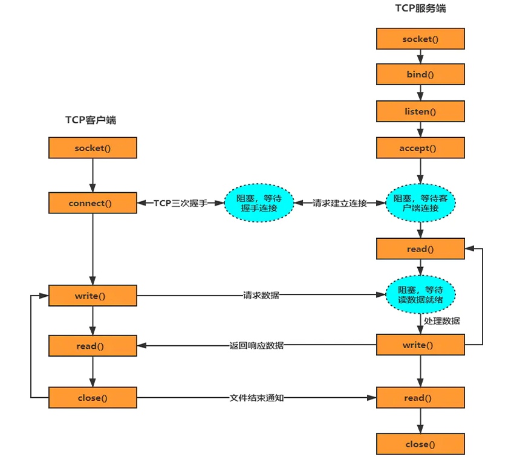

网络通信中，最底层的就是操作系统内核中的网络IO模型了。
随着技术的发展，网络模型衍生出了五种IO： 阻塞式IO、非阻塞式IO、IO复用、信号驱动式IO和异步IO 。
每一种IO模型的出现，都是基于前一种IO模型的优化升级。
时隔一年，我又回来了。
一些概念
内核态和用户态
用户空间是用户进程所在的内存区域，内核空间是操作系统所在的内存区域。read/write系统调用
把数据从内核缓冲区复制到进程缓冲区 / 把数据从进程缓冲区复制到内核缓冲区。
缓冲区的目的，是为了减少频繁的系统IO调用（上下文切换，进程数据和状态等信息）。缓冲区达到一定数量才会进行IO的调用，提升性能。至于什么时候读取和存储则由内核来决定，用户程序无需关心。TCP 服务端的工作流程
当有一个客户端连接到服务端之后，服务端就会调用 fork 创建一个子进程，通过系统调用 read 监听客户端发来的消息，再通过 write 向客户端返回信息。

正文
阻塞式IO (BIO)
读写数据的过程中发生阻塞，用户线程发出io读写请求后(read/write系统调用)，内核开始检查数据是否就绪：
- 没有就绪：用户线程阻塞，并且交出CPU （优点，不占用CPU）
- 已经就绪：内核会将数据复制到进程缓冲区，并返回结果给用户线程
socket通信过程中，可能存在的阻塞有三种：
- connect 阻塞：TCP建立连接时，等待ACK信号…
- accept 阻塞：阻塞等待外来的连接
- read/write 阻塞：fork子进程，写入/返回数据
非阻塞式IO (NIO)
当系统调用时，数据没有就绪，那么线程会立即返回 （优点：不阻塞），但是需要进行轮询检查 （缺点，占用大量CPU时间，CPU利用率低），直到数据就绪，用户线程阻塞，内核开始从内核缓冲区复制数据到用户进程缓冲区，然后内核返回结果。


如果长时间无法加载，请针对 disq.us | disquscdn.com | disqus.com 启用代理